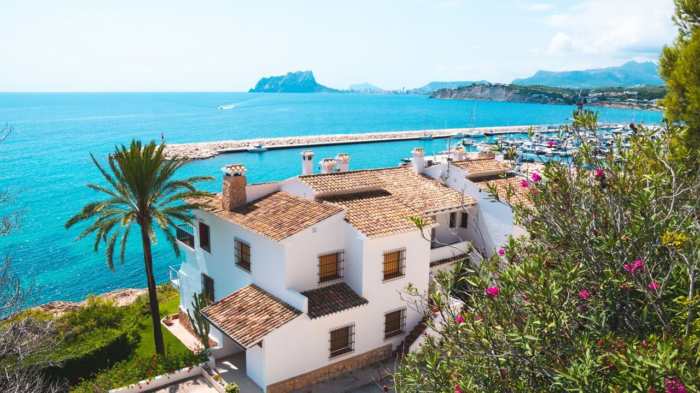
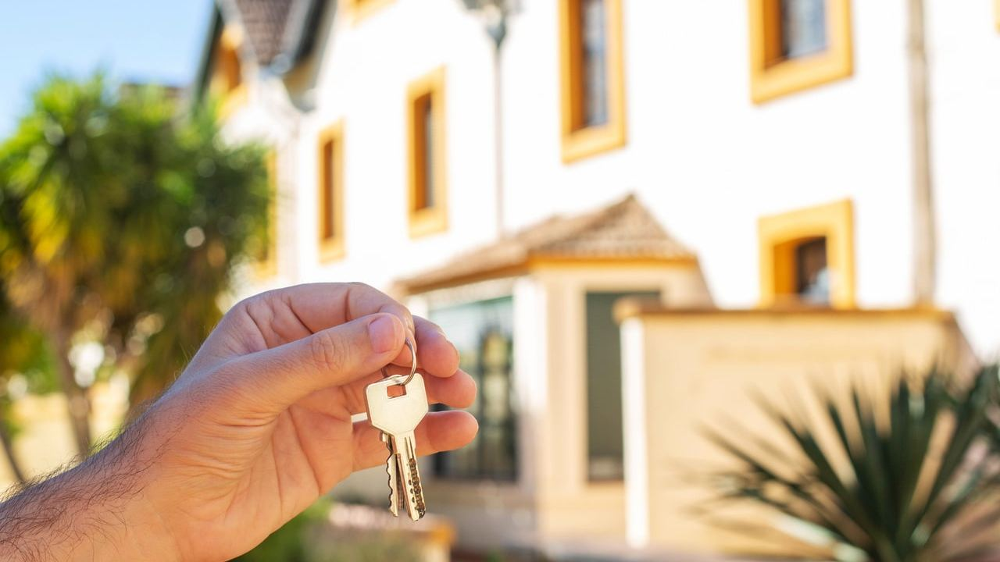

Buying in Spain · Finance
Mortgages in Spain for Foreign Buyers – How to Get One
 By Aleksandra Kobus · · updated · 5 min read
By Aleksandra Kobus · · updated · 5 min read

In short: Spanish banks lend to foreigners, including non-residents. Non-residents can usually borrow 60–70% of the purchase price or valuation (whichever is lower), residents up to 80%. Terms run to about 20–25 years for non-residents and up to 30 for residents, and the loan should be repaid by age 70–75. The average rate on new Spanish home loans was 3.01% in July 2026. Plan on 30–40% of the price plus 10–14% for taxes and fees from your own funds, and allow 4–8 weeks from application to signing.
You do not need to pay cash for a home in Spain. Spanish banks finance holiday homes and investment properties for foreign buyers every day, as long as you can show a steady income and a clean credit record.
This guide explains how much you can borrow, what it costs, which documents to prepare and how the process works, from the first bank meeting to the signing at the notary.
Can a foreigner get a mortgage in Spain?
Yes. Spanish banks lend to EU and non-EU citizens, whether or not they live in Spain. What matters is that you can prove where your income comes from, how much it is and that your existing debts are under control. Most large banks, such as Santander, BBVA, CaixaBank, Sabadell and Bankinter, have teams for international clients, and some lenders work only with non-residents.
The bank treats you as a resident if you live in Spain and pay tax there, usually because you spend more than 183 days a year in the country. Everyone else is a non-resident, and the conditions differ quite a bit, as the table below shows.
You can finance a main home, a holiday home or an investment property. Before you apply you need an NIE number and, in practice, a Spanish bank account.
How much can you borrow and for how long?
Banks lend a percentage of the purchase price or the official valuation (tasación), whichever is lower. Typical conditions in 2026:
| Resident | Non-resident | |
|---|---|---|
| Loan to value | up to 80% | usually 60–70% |
| Maximum term | up to 30 years | usually 20–25 years |
| Age at last payment | about 70–75 | about 70–75 |
| Interest rate | standard offers | often a few tenths of a point higher |
| Income documents | Spanish payslips and tax returns | foreign documents, often translated |
Banks also look at affordability. As a rule, all your monthly loan payments together, in Spain and at home, should not be more than about 30–35% of your net income.
The purchase taxes and fees are not financed. As a non-resident you should plan to pay 30–40% of the price plus about 10–14% in costs from your own money. Our guide to buying property in Spain breaks those costs down.
Interest rates: fixed, variable or mixed
Spanish banks offer three types of loan:
- Fixed rate (tipo fijo): the same payment for the whole term. Most Spanish buyers now choose this, 62% of new home loans in July 2026.
- Variable rate (tipo variable): 12-month Euribor plus a margin, reviewed every 6 or 12 months. Euribor was around 3% in autumn 2026, after a low of about 2.2% earlier in the year.
- Mixed (tipo mixto): fixed for the first years, then variable.
According to the Spanish statistics office INE, the average rate on new home loans was 3.01% in July 2026 (3.03% fixed, 2.97% variable at the start), with an average term of 26 years. Non-residents often pay a little more. Banks lower the rate if you take extra products such as home and life insurance or pay your income into the account, so always compare the rate with and without these extras.
A word on currency
Spanish mortgages are in euros. If you earn in pounds, Swiss francs or dollars, your monthly cost changes with the exchange rate, and some banks lend you less for that reason. A fixed rate removes the interest risk but not the currency risk.
Who pays what?
Since the 2019 mortgage law (Ley 5/2019), the bank pays most costs of setting up the mortgage. You pay:
- the valuation (tasación), usually €300–600,
- any opening fee (comisión de apertura), often 0–1% and many banks charge none,
- home insurance, which is required, and any optional products you accept,
- copies of the deed you ask for.
The bank pays the notary for the mortgage deed, the land registry, the processing agency (gestoría) and the stamp duty on the mortgage. The taxes on the purchase itself are still yours.
The law also caps the fees for paying back early. On a variable loan, the bank can charge 0.25% in the first 3 years or 0.15% in the first 5 years, depending on the contract. On a fixed loan it can charge up to 2% in the first 10 years and 1.5% after that.
Which documents do you need?
Requirements vary by bank, but most ask for:
- passport and NIE,
- employment contract and the last 3–6 payslips, or company accounts if you are self-employed,
- your tax returns for the last 2 years,
- bank statements for the last 6 months,
- a credit report from your home country,
- a list of your other loans and assets,
- proof of the money you will put in yourself,
- the reservation or deposit contract for the property.
Documents in another language than Spanish or English often need a sworn translation. Ask the bank early which ones, because translations take time.
The process, step by step
- Pre-approval. Send your documents to two or three banks or to a mortgage broker before you reserve a property, so you know your budget.
- Reservation. Reserve the property and agree a deposit contract that gives you enough time for the loan.
- Valuation. The bank sends a valuer to the property.
- Binding offer. The bank gives you the European Standardised Information Sheet (FEIN) and a warning sheet (FiAE) at least 10 calendar days before signing.
- Notary check. In those 10 days you meet the notary, free of charge, who explains the loan and confirms you understand it. You can do this through a lawyer with a power of attorney if you are abroad.
- Signing. The purchase deed and the mortgage deed are signed at the notary on the same day, and you get the keys.
From application to signing, allow 4–8 weeks, sometimes longer for non-residents or complex incomes. For an off-plan home, the mortgage is signed only at completion, when the building is finished.
Example: a €300,000 home on the Costa Blanca
A non-resident buys a resale apartment for €300,000 in the Valencian Community and borrows 70%:
| Mortgage (70%) | €210,000 |
| Own funds for the price (30%) | €90,000 |
| Transfer tax (ITP 9%) | €27,000 |
| Notary, registry, lawyer, valuation (about 2%) | about €6,000 |
| Total own funds | about €123,000 |
| Monthly payment, 25 years at an assumed 3.3% fixed | about €1,030 |
The rate is only an example. Your offer depends on the bank, your income and the products you take.
Frequently asked questions
Can a non-resident get a mortgage in Spain?
Yes. Non-residents usually get 60–70% of the price or valuation over 20–25 years, provided they can prove a stable income and a good credit record in their home country.
Can I get a 100% mortgage in Spain as a foreigner?
Not as a non-resident. Expect to pay at least 30% of the price plus 10–14% for taxes and fees yourself. Residents can sometimes get 80% or more.
Do I have to be in Spain to sign the mortgage?
No. You can give a lawyer a power of attorney to sign for you, including the notary check before signing. Many buyers still come for the signing.
How long does a Spanish mortgage take?
Usually 4–8 weeks from a complete application to signing at the notary, including the valuation and the 10-day period after the binding offer.
Can I use a mortgage in my home country instead?
Some buyers borrow against a home they already own at home. It can be simpler, but compare the total cost and the currency risk with a Spanish loan.
Know your budget before you search

A pre-approval tells you exactly how much you can spend and makes your offer stronger. Contact us and we will put you in touch with independent mortgage brokers and banks that work with international buyers, and show you homes that fit your budget.
Sources: INE – Mortgage statistics, July 2026 · BOE – Ley 5/2019 on real estate credit agreements · Banco de España – Portal del Cliente Bancario